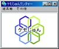
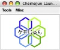
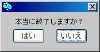
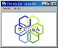

2006年08月08日 文責：浅岡 浩子
ランタイム版は、VisualWorks や Jun などの開発環境をインストールしなくても システムをすぐに使用することができます。
いろいろな人にシステムを使ってもらうのに便利です。
このページでは、ランタイム版のインストール方法を解説します。
Windows & Macintosh 版 での説明ですが、 それぞれ違う箇所は、以下のように背景色を変えています。
|
Windows 版 の説明 |
Macintosh 版 の説明 |
以下の「ケモじゅん」のランタイム版が必要となります。
注：（）内の ??? は、000 もしくはバージョン番号になります。
日本語版
|
ChemoJun???WinRTj.zip |
-- None -- |
英語版
|
ChemoJun???WinRTe.zip |
ChemoJun???MacRTe.dmg |
「ケモじゅん」の ランタイム版ファイル を用意します。
好きな環境のものを選んでください。
ランタイム版ファイル をハードディスクの中の適当なディレクトリに展開します。
展開すると、次のようなフォルダやファイルが作成されます。
Win - 日本語版
ChemoJun???WinRTj
+- ChemoJunMolData/
| +- *folders*/
| +- *.mol
| +- *.2D.mol
+- ja/
| +- chemoJunDictionary.idx
| +- chemoJunDictionary.lbl
| +- junDictionary.idx
| +- junDictionary.lbl
+- ChemoJun???RT.im
+- glu32.dll
+- herald.bmp
+- herald.wav
+- JunWinQT.dll
+- opengl32.dll
+- ReadMe.txt
+- visual.bat
+- visual.exe
Win - 英語版
ChemoJun???WinRTe
+- ChemoJunMolData/
| +- *folders*/
| +- *.mol
| +- *.2D.mol
+- ChemoJun???RT.im
+- glu32.dll
+- herald.bmp
+- herald.wav
+- JunWinQT.dll
+- opengl32.dll
+- ReadMe.txt
+- visual.bat
+- visual.exe
Mac - 英語版
ChemoJun???MacRTe
+- ChemoJunMolData/
| +- *folders*/
| +- *.mol
| +- *.2D.mol
+- ChemoJun???RT.im
+- JunMacOSXInterface.dylib
+- ReadMe.txt
+- visual.app
圧縮ファイルがマウントされた状態ではなく、必ずハードディスク内に上記のフォルダをコピーしてください。
このフォルダを「ランタイム版ディレクトリ」とします。
これでインストールは終了です。
以下のように起動します。
|
ランタイム版ディレクトリ内にあるバッチファイル「visual.bat」 をダブルクリックして、起動します。 |
|
ランタイム版ディレクトリ内の「visual.app」（仮想マシン）をダブルクリックして、「ChemoJun???RT.im」（仮想イメージ）を選択して「Open」ボタンを押します。 |
起動すると、スクリーンの左上にケモじゅんランチャーが出現します。
|  |  |
終了するにはケモじゅんランチャーを閉じます。
ランチャーの「×」アイコンをクリックします。
「本当に終了しますか？【Really quit?】」という確認ダイアログが出ますので、「はい【Yes】」のボタンを押します。
|  |
日本語版のメニューやメッセージは、デフォルトで日本語になっています。
ランタイム版ディレクトリの直下にある「ja」ディレクトリを移動させることで、メニューなどを日本語と英語に切り替えることができます。
システムを起動中の場合は、終了しておきます。
「ja」のディレクトリを他の場所へ移動します。
システムを起動すると、英語表示になります。
|  | No Printing ! |
※「ja」のディレクトリを移動する際は、必ず起動中のシステムを終了させてから行ってください。
{kind=link}
{kind=link}
{kind=link}
{kind=link}
{kind=link}